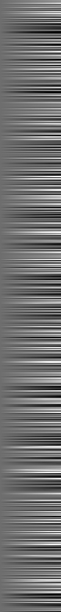
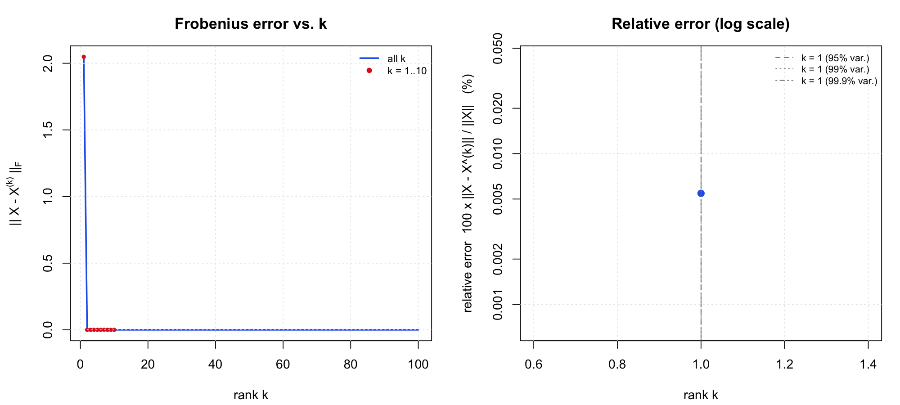
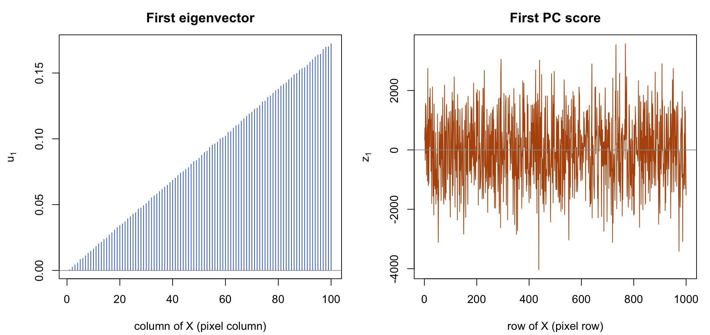

image 2 — an exactly rank-1 image
Another 1000 × 100 matrix, this time a pattern of horizontal stripes with a smooth left-to-right gradient. It is the cleanest possible case for PCA: the matrix is, to numerical precision, exactly rank 1.
Size: n = 1000 rows × p = 100 columns · ‖X‖F = 37,538.8 · Variance in PC1: 100.0% · k for 95% / 99% of variance: 1 / 1
1. The original and its first ten approximations
 original
original k = 2
k = 2 k = 3
k = 3 k = 4
k = 4 k = 5
k = 5 k = 6
k = 6 k = 7
k = 7 k = 8
k = 8 k = 9
k = 9
k = 10The original and the rank-1 approximation are indistinguishable, and they should be — the rank-1 error is 2.05 against an image norm of 37,539, a relative error of 0.006%. The remaining panels are not improvements so much as confirmations: by k = 2 the reconstruction is exact to machine precision.
Beyond k = 10
original k = 15
k = 15 k = 20
k = 20 k = 30
k = 30 k = 50
k = 50Grayscale mapping: for every panel of this image, black and white are pinned to the 2nd and 98th percentile of the original matrix, so all panels are directly comparable and a few extreme pixels cannot wash the rest out.
2. Approximation error against k

The eigenvalues explain everything: λ1 = 1.41 × 109, λ2 = 4.2, and λ3 onwards are at the 10−7 level, which is numerical dust. The error therefore collapses at k = 1 and is exactly zero from k = 2, so the log-scale panel has only a single plottable point — that single point is the whole story for this image.
| k | ‖X − X(k)‖F | relative error | cumulative variance | numbers stored | vs. original |
|---|---|---|---|---|---|
| 1 | 2.05 | 0.01% | 100.00% | 1,100 | 1.1% |
| 2 | 0.00 | 0.00% | 100.00% | 2,200 | 2.2% |
| 3 | 0.00 | 0.00% | 100.00% | 3,300 | 3.3% |
| 4 | 0.00 | 0.00% | 100.00% | 4,400 | 4.4% |
| 5 | 0.00 | 0.00% | 100.00% | 5,500 | 5.5% |
| 6 | 0.00 | 0.00% | 100.00% | 6,600 | 6.6% |
| 7 | 0.00 | 0.00% | 100.00% | 7,700 | 7.7% |
| 8 | 0.00 | 0.00% | 100.00% | 8,800 | 8.8% |
| 9 | 0.00 | 0.00% | 100.00% | 9,900 | 9.9% |
| 10 | 0.00 | 0.00% | 100.00% | 11,000 | 11.0% |
| 15 | 0.00 | 0.00% | 100.00% | 16,500 | 16.5% |
| 20 | 0.00 | 0.00% | 100.00% | 22,000 | 22.0% |
| 30 | 0.00 | 0.00% | 100.00% | 33,000 | 33.0% |
| 50 | 0.00 | 0.00% | 100.00% | 55,000 | 55.0% |
| 100 (full) | 0.00 | 0.00% | 100.00% | 100,000 | 100.0% |
3. The first eigenvector and the first PC score

Interpretation
The first eigenvector is a straight line. The loadings increase linearly with column index — the correlation between u1 and the column number 1, 2, …, 100 is 1.000 (loading 0.0006 at column 1 rising to 0.172 at column 100). So the dominant pattern is a left-to-right brightness ramp.
The first PC score is the per-row amplitude of that ramp. z1 is perfectly correlated (1.000) with the row means of X and ranges from −4,034 to +3,570. Reading the two plots together, the image is separable: X[i, j] ≈ z1[i] × u1[j]. Rows with a large positive score are bright ramps, rows with a large negative score are the same ramp inverted (bright on the left, dark on the right), and rows with a score near zero are flat grey. The horizontal striping you see is just z1 jumping between those values from one row to the next.
4. How large does k need to be?
k = 1. A relative error of 0.006% is far below anything the eye can detect, and one component compresses 100,000 numbers into 1,100 — a 91× reduction. If you want the matrix back bit-for-bit, k = 2 achieves it exactly and still costs only 2,200 numbers. There is no reason to go past 2 for this image.